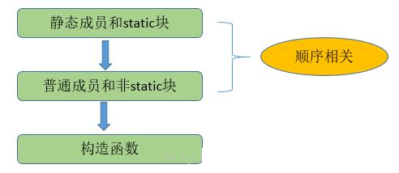

单例模式
在面试中此模式是被问的最多的,因为可发散的思维点太多了
所谓单例，就是整个程序有且仅有一个实例。该类负责创建自己的对象，同时确保只有一个对象被创建。 在Java中，一般常用在工具类的实现或创建对象需要消耗大量资源时。
特点
- 类构造器私有
- 持有自己类型的属性
- 对外提供获取实例的静态方法
懒汉模式
线程不安全，延迟初始化，严格意义上不是不是单例模式；在高并发时可能产生多个对象。
public class Singleton {
private static Singleton instance;
private Singleton (){}
public static Singleton getInstance() {
if (instance == null) {
instance = new Singleton();
}
return instance;
}
}
饿汉模式
线程安全，比较常用，但容易产生垃圾，因为一开始就初始化，但全局不使用。
public class Singleton {
private static Singleton instance = new Singleton();
private Singleton (){}
public static Singleton getInstance() {
return instance;
}
}
双重锁模式
线程安全，延迟初始化。这种方式采用双锁机制，安全且在多线程情况下能保持高性能。
public class Singleton {
private volatile static Singleton singleton;
private Singleton (){}
public static Singleton getSingleton() {
if (singleton == null) {
synchronized (Singleton.class) {
if (singleton == null) {
singleton = new Singleton();
}
}
}
return singleton;
}
}
双重检查模式，进行了两次的判断，第一次是为了避免不必要的实例;第二次是为了进行同步，避免多线程问题。
由于singleton = new Singleton()对象的创建在JVM中可能会进行重排序， 在多线程访问下存在风险，使用volatile修饰signleton实例变量，解决该问题。
推荐一个知乎上的问题:
双重检查锁失效是因为对象的初始化并非原子操作?
是因为指令重排造成的。 直接原因也就是初始化一个对象并使一个引用指向他这个过程不是原子的。 导致了可能会出现引用指向了对象并未初始化好的那块堆内存, 使用volatile修饰对象引用，防止重排序即可解决。
拿出来解释一下吧：
help = new Help();
主要原因就是这个操作不是原子性的，从而留给了JVM重排序的机会。 JVM的重排序也是有原则的，在单线程中，不管怎么排，保证最终结果一致。 注意这里是单线程。
多线程的情况下指令重排序就会给程序带来问题。 如下help = new Help()这个操作可以拆成如下四步：
- 栈内存开辟空间给help引用
- 堆内存开辟空间准备初始化对象
- 初始化对象
- 栈中引用指向这个堆内存空间地址指令
重排之后可能会是1、2、4、3；这样重排之后对单个线程来说效果是一样的， 所以JVM认为是合法的重排序。但是这样在多线程环境下就会出问题， 这里到4的时候help已经指向了一块堆内存，只是这块堆内存还没初始化就直接返回了， 假如使用的时候就会抛NullPointException。
当然这里的几个步骤并不算真正的指令，指令的粒度只会比这个还小，但是可以说明问题。 加入volatile之后查看汇编代码可以发现多了一句 lock addl $0x0,(%esp)相当于一个内存屏障。
volatile的作用：保证内存可见性，防止指令重排序，并不保证操作原子性。
这里用到的就是防止指令重排序的性质。
如何实现这些性质的
- 保证可见性：使用该变量必须重新去主内存读取，修改了该变量必须立刻刷新主内存。
- 防止重排序：通过插入内存屏障。
静态内部类单例模式
public class Singleton {
private Singleton(){
}
public static Singleton getInstance(){
return Inner.instance;
}
private static class Inner {
private static final Singleton instance = new Singleton();
}
}
只有第一次调用getInstance方法时，虚拟机才加载 Inner 并初始化instance。
只有一个线程可以获得对象的初始化锁，其他线程无法进行初始化，保证对象的唯一性。 这个同步过程由JVM实现了，更合适，更可靠。
目前此方式是所有单例模式中最推荐的模式，但具体还是根据项目选择。
里面提到一个对象的初始化锁是什么意思，这里就不得不提类的加载顺序:
对于静态变量、静态初始化块、变量、初始化块、构造器， 它们的初始化顺序依次是（静态变量、静态初始化块）>（变量、初始化块）> 构造器。
而且一个类的静态变量、静态初始化块 全局加载且仅加载一次。及第一次实例化此类时。
这里又引出一个新的概念：java 的init方法与clinit方法

/**
* 类的初始化顺序
* 静态变量 -> 静态初始化块 -> 变量 -> 初始化块 -> 构造器
*/
public class InitialOrderTest {
// 静态变量
public static String staticField = "静态变量";
// 静态初始化块
static {
System.out.println(staticField);
System.out.println("静态初始化块");
}
// 变量
public String field = "变量";
// 初始化块
{
System.out.println(field);
System.out.println("初始化块");
}
// 构造器
public InitialOrderTest() {
System.out.println("构造器");
}
public static void main(String[] args) {
new InitialOrderTest();
System.out.println("====");
new InitialOrderTest();
}
}
执行结果如下：
静态变量
静态初始化块
变量
初始化块
构造器
====
变量
初始化块
构造器
如下是不是就有人提出用静态代码块实现单例
静态代码块实现单例模式，事实上就是饿汉单例模式的变种。
public class T{
public static void main(String[] args) {
Singleton.print();
/*************/
Singleton2.print();
}
}
class Singleton{
private static Singleton instance;
private Singleton(){}
static{
System.out.println("Singleton--我在被调用的时候加载，而且只加载一次");
instance = new Singleton();
}
public static Singleton getInstance(){
return instance;
}
public static void print(){
System.out.println("我只想调用这个方法，不想初始化实例对象");
}
}
class Singleton2{
private Singleton2(){}
private static class Handler{
static{
System.out.println("Singleton2--我在调用的时候被加载，而且只加载一次");
}
private static Singleton2 instance = new Singleton2();
}
public static Singleton2 getInstance(){
return Handler.instance;
}
public static void print(){
System.out.println("我只想调用这个方法，不想初始化实例对象");
}
}
输出结果：
Singleton–我在被调用的时候加载，而且只加载一次
我只想调用这个方法，不想初始化实例对象
=======
我只想调用这个方法，不想初始化实例对象
很明显，这里在不想初始化的时候，它初始化了，所以是一种变种的饿汉单例模式。
枚举单例模式
public enum Singleton {
INSTANCE;
}
默认枚举实例的创建是线程安全的，并且在任何情况下都是单例。
实际上
- 枚举类隐藏了私有的构造器。
- 枚举类的域是相应类型的一个实例对象
那么枚举类型日常用例是这样子的：
public enum Singleton {
INSTANCE
//doSomething 该实例支持的行为
//可以省略此方法，通过Singleton.INSTANCE进行操作
public static Singleton get Instance() {
return Singleton.INSTANCE;
}
}
枚举单例模式在《Effective Java》中推荐的单例模式之一。 但枚举实例在日常开发是很少使用的，就是很简单以导致可读性较差。
在以上所有的单例模式中，推荐静态内部类单例模式。主要是非常直观，即保证线程安全又保证唯一性。
spring中的单例
大家应该都知道spring的对象默认是单例的，那么spring中是运用了怎样的单例模式呢？
如下是spring5.x DefaultSingletonBeanRegistry的源码
@Nullable
protected Object getSingleton(String beanName, boolean allowEarlyReference) {
Object singletonObject = this.singletonObjects.get(beanName);
if (singletonObject == null && isSingletonCurrentlyInCreation(beanName)) {
synchronized (this.singletonObjects) {
singletonObject = this.earlySingletonObjects.get(beanName);
if (singletonObject == null && allowEarlyReference) {
ObjectFactory<?> singletonFactory = this.singletonFactories.get(beanName);
if (singletonFactory != null) {
singletonObject = singletonFactory.getObject();
this.earlySingletonObjects.put(beanName, singletonObject);
this.singletonFactories.remove(beanName);
}
}
}
}
return singletonObject;
}
什么情况下会破坏单例模式
反序列化
众所周知，单例模式是创建型模式，都会新建一个实例。 那么一个重要的问题就是反序列化。 当实例被写入到文件到反序列化成实例时， 我们需要重写readResolve方法，以让实例唯一。
private Object readResolve() throws ObjectStreamException{
return singleton;
}
测试代码：
package cp2;
import java.io.Serializable;
import java.util.Objects;
public class SerSingleton implements Serializable {
String name;
private SerSingleton(){
System.out.println("Singleton is creating");
}
private static SerSingleton instance = new SerSingleton();
public static SerSingleton getInstance(){
return instance;
}
public static void createString(){
System.out.println("create string in singleton");
}
}
import cp2.SerSingleton;
import junit.framework.Assert;
import org.junit.Test;
import java.io.FileInputStream;
import java.io.FileOutputStream;
import java.io.ObjectInputStream;
import java.io.ObjectOutputStream;
public class SerSingletonTest {
@Test
public void test() throws Exception{
SerSingleton s1 = null;
SerSingleton s = SerSingleton.getInstance();
FileOutputStream fos = new FileOutputStream("a.txt");
ObjectOutputStream oos = new ObjectOutputStream(fos);
oos.writeObject(s);
oos.flush();
oos.close();
FileInputStream fis = new FileInputStream("a.txt");
ObjectInputStream ois = new ObjectInputStream(fis);
s1 = (SerSingleton) ois.readObject();
Assert.assertEquals(s,s1);
}
}
结果：
junit.framework.AssertionFailedError:
Expected :cp2.SerSingleton@7ab2bfe1
Actual :cp2.SerSingleton@497470ed
<Click to see difference>
问题来了，怎么解决呢？jdk其实预料到这种情况了。
解决方法：加入readResolve()
在jdk中ObjectInputStream的类中有readUnshared（）方法，上面详细解释了原因。我简单描述一下，那就是如果被反序列化的对象的类存在readResolve这个方法，他会调用这个方法来返回一个“array”（我也不明白），然后浅拷贝一份，作为返回值，并且无视掉反序列化的值，即使那个字节码已经被解析。 所以，完整的单例模式是：
package cp2;
import java.io.Serializable;
import java.util.Objects;
public class SerSingleton implements Serializable {
String name;
private SerSingleton(){
System.out.println("Singleton is creating");
}
private static SerSingleton instance = new SerSingleton();
public static SerSingleton getInstance(){
return instance;
}
public static void createString(){
System.out.println("create string in singleton");
}
private Object readResolve(){
System.out.println("read resolve");
return instance;
}
}
反射
一个单例类：
public class Singleton {
private static Singleton instance = new Singleton();
private Singleton() {}
public static Singleton getInstance() {
return instance;
}
}
通过反射破坏单例模式：
public class Test {
public static void main(String[] args) throws Exception{
Singleton s1 = Singleton.getInstance();
Constructor<Singleton> constructor = Singleton.class.getDeclaredConstructor();
constructor.setAccessible(true);
Singleton s2 = constructor.newInstance();
System.out.println(s1.hashCode());
System.out.println(s2.hashCode());
}
}
输出结果：
671631440
935563443
结果表明s1和s2是两个不同的实例了。
通过反射获得单例类的构造函数，由于该构造函数是private的， 通过setAccessible(true)指示反射的对象在使用时应该取消 Java 语言访问检查, 使得私有的构造函数能够被访问，这样使得单例模式失效。
如果要抵御这种攻击，要防止构造函数被成功调用两次。 需要在构造函数中对实例化次数进行统计，大于一次就抛出异常。
public class Singleton {
private static int count = 0;
private static Singleton instance = null;
private Singleton(){
synchronized (Singleton.class) {
if(count > 0){
throw new RuntimeException("创建了两个实例");
}
count++;
}
}
public static Singleton getInstance() {
if(instance == null) {
instance = new Singleton();
}
return instance;
}
public static void main(String[] args) throws Exception {
Constructor<Singleton> constructor = Singleton.class.getDeclaredConstructor();
constructor.setAccessible(true);
Singleton s1 = constructor.newInstance();
Singleton s2 = constructor.newInstance();
}
}
执行结果：
Exception in thread "main" java.lang.reflect.InvocationTargetException
at sun.reflect.NativeConstructorAccessorImpl.newInstance0(Native Method)
at sun.reflect.NativeConstructorAccessorImpl.newInstance(Unknown Source)
at sun.reflect.DelegatingConstructorAccessorImpl.newInstance(Unknown Source)
at java.lang.reflect.Constructor.newInstance(Unknown Source)
at com.yzz.reflect.Singleton.main(Singleton.java:33)
Caused by: java.lang.RuntimeException: 创建了两个实例
at com.yzz.reflect.Singleton.<init>(Singleton.java:14)
... 5 more
优点
提供了对唯一实例的受控访问。因为单例类封装了它的唯一实例，所以它可以严格控制客户怎样以及何时访问它，并为设计及开发团队提供了共享的概念。 由于在系统内存中只存在一个对象，因此可以节约系统资源，对于一些需要频繁创建和销毁的对象，单例模式无疑可以提高系统的性能。 允许可变数目的实例。我们可以基于单例模式进行扩展，使用与单例控制相似的方法来获得指定个数的对象实例。
缺点
由于单例模式中没有抽象层，因此单例类的扩展有很大的困难。 单例类的职责过重，在一定程度上违背了“单一职责原则”。因为单例类既充当了工厂角色，提供了工厂方法，同时又充当了产品角色，包含一些业务方法，将产品的创建和产品的本身的功能融合到一起。 滥用单例将带来一些负面问题，如为了节省资源将数据库连接池对象设计为单例类，可能会导致共享连接池对象的程序过多而出现连接池溢出；现在很多面向对象语言(如Java、C#)的运行环境都提供了自动垃圾回收的技术，因此，如果实例化的对象长时间不被利用，系统会认为它是垃圾，会自动销毁并回收资源，下次利用时又将重新实例化，这将导致对象状态的丢失。
适用环境
系统只需要一个实例对象，如系统要求提供一个唯一的序列号生成器，或者需要考虑资源消耗太大而只允许创建一个对象。 客户调用类的单个实例只允许使用一个公共访问点，除了该公共访问点，不能通过其他途径访问该实例。 在一个系统中要求一个类只有一个实例时才应当使用单例模式。反过来，如果一个类可以有几个实例共存，就需要对单例模式进行改进，使之成为多例模式
模式应用
一个具有自动编号主键的表可以有多个用户同时使用，但数据库中只能有一个地方分配下一个主键编号， 否则会出现主键重复，因此该主键编号生成器必须具备唯一性，可以通过单例模式来实现。